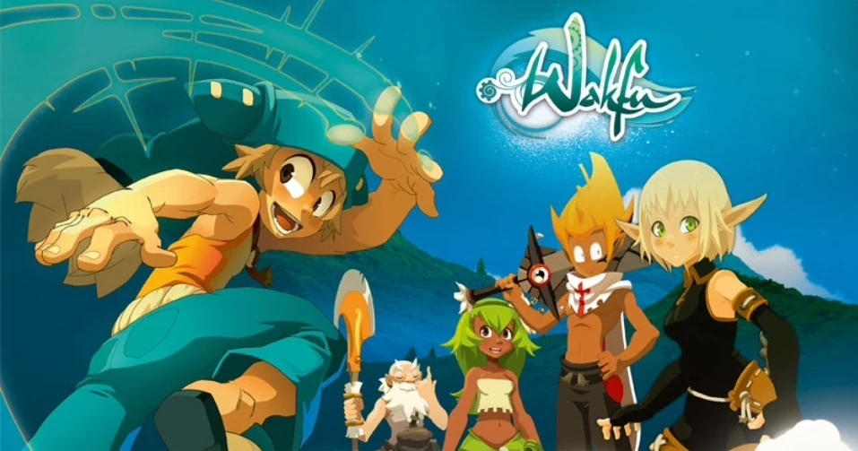

Bienvenido al Mundo de Wakfu

Wakfu es una serie animada francesa producida por Ankama. Se desarrolla en el Mundo de los Doce, un universo lleno de magia, razas únicas y aventuras épicas. La historia sigue a Yugo, un joven Eliatrope con poderes extraordinarios, que junto a sus amigos viaja en busca de sus orígenes y del equilibrio del mundo. 
Datos relevantes:
- País de origen: Francia (Ankama Animation)
- Género: Fantasía, aventura, comedia
- Estreno: 2008
- Plataforma: Netflix y streaming oficial de Ankama
Este proyecto implementa un Service Worker con caché dinámico, estrategia network-first y notificaciones locales.